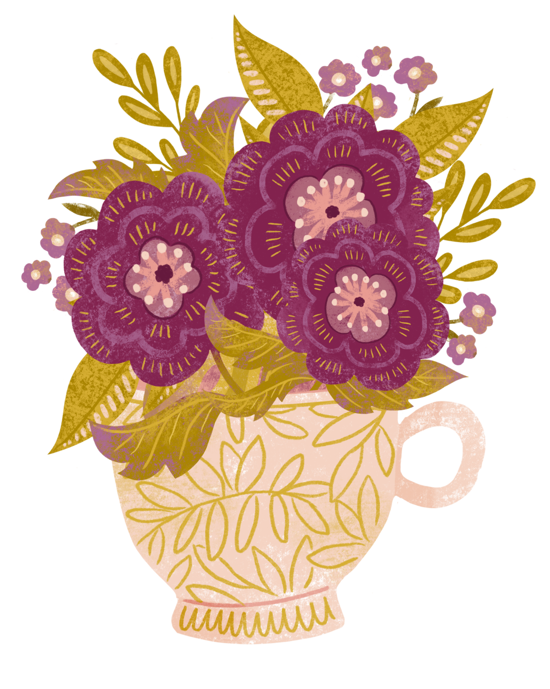
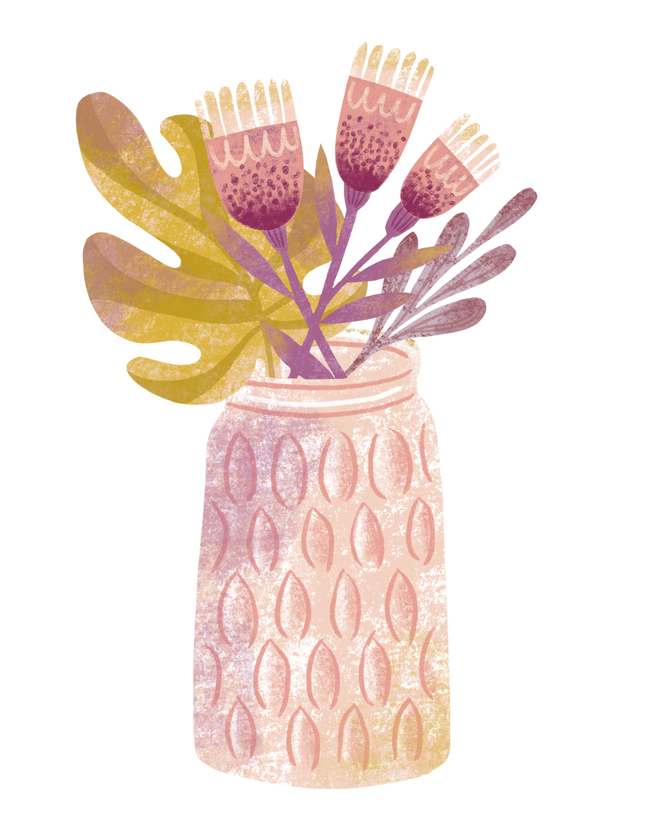
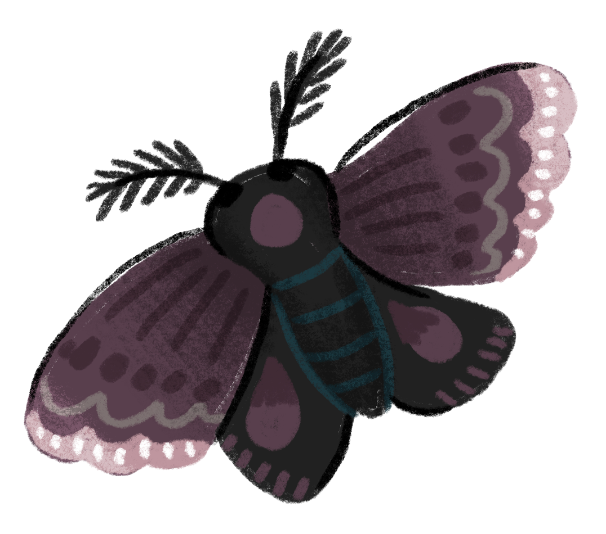

From the desk of Lexi Lavene
The Storybound
Archive
Every story blooms from somewhere.
An intimate record of how my books came to be—the sparks that started them, the life I was living while I wrote them, and the pieces of myself that rooted themselves between the lines.
The collected works
Choose a story
Each volume opens its own archive. Connected books will lead you quietly forward—or back to the beginning—once you step inside.


A note from the archivist
There is always a paper trail.
Some begin with a character who refuses to leave. Some begin in grief, fury, hope, or a half-remembered dream. This is where I gather those beginnings—and trace what grew between the first idea and the final page.